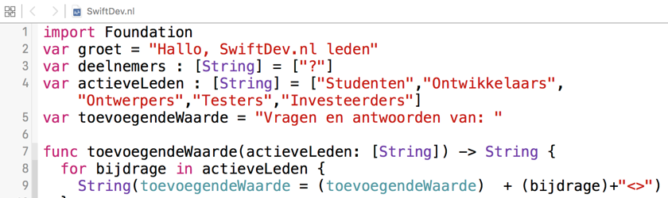

SwiftDev.nl brengt Nederlandstalige Swift app-ontwikkelaars samen. Wij bieden alle actieve, gepassioneerde Swift- en app-ontwikkelaars een ongedwongen ontmoetingsplek, waar plezier in wat we doen en waarmee we bezig zijn altijd voorop staat. Daarom wisselen wij als 'Swift studenten', net beginnende, gevorderde en expert-ontwikkelaars, ontwerpers, testers, betrokken gebruikers op deze website en op ons chatkanaal -mét en vóór elkaar- onze Swift- en app-ervaringen uit.

Door kennis en kunde met elkaar te delen ontstaat er een zeer groeizame kweekvijver. SwiftDev.nl is een gemeenschap waar iedereen profiteert van deze gebundelde kracht. Het is onze intentie de vele talenten van onze leden op meerdere vlakken zichtbaar te maken. Vanaf nu hebben onze geregistreerde leden alle vrijheid hun ideeën pro-actief verder te brengen. Het is onze overtuiging én ervaring dat actieve onderlinge verbinding op vrijwillige basis het beste in ons allemaal los maakt.
Meld je nu aan, post al je vragen en antwoorden over Swift en app-ontwikkeling op ons chatkanaal. Je zult zien hoe vruchtbaar jouw lidmaatschap in korte tijd zal zijn. Leg contacten met andere SwiftDev.nl leden, in jouw omgeving of op jullie vakgebied. Wissel ideeën uit. Ideeën die je samen, iedereen vanuit zijn/haar eigen expertise, tot uitvoer brengt. Bedenk je dat goede ontwikkelde apps tegenwoordig een veel groter en soms zelfs mondiale belang vertegenwoordigen. Zinvolle, goed ontwikkelde apps zullen het leven van vele gelukkige gebruikers enorm verrijken. Kijk daarbij vooral verder dan de nu al gebaande paden, kijk naar je eigen behoeften en de behoeften die jij in je omgeving ondervindt. Leg je oor ook bij zo veel mogelijk anderen te luisteren.
Besef je dat, met de juiste mensen, bestaande producten en diensten vaak vele stappen verder gebracht kunnen worden. De iPhone en iTunes zijn daar een tastbaar én een treffend voorbeeld van. In de biografie van Steve Jobs staat een zeer toepasselijke anekdote waarin Steve zijn biograaf toevertrouwt dat je altijd open moet staan voor briljante ideeën van "gekken". Het was zijn (Steve Jobs) ervaring en overtuiging dat deze grondhouding de wereld en de mensheid pas echt zinvol vooruit kon brengen. De gevolgen van deze overtuiging zijn inmiddels genoegzaam bekend.
Iedereen is de smid van zijn/haar eigen geluk én ons gezamenlijke bestaan!
Daarom willen wij iedere geïnteresseerde (jong én oud) mobiliseren zich actief te verdiepen in de vele mogelijkheden die Swift apps bieden om het (menselijke) verschil te maken. Er is voor iedereen veel te winnen. Ontwerpers verbreden hun horizon en leveren hun creatieve bijdrage aan sprankelende gebruikerservaringen. Swift ontwikkelaars slaan samen nieuwe bruggen tussen oude en nieuwe technologie. Testers zorgen er voor dat apps optimaal aansluiten bij de beleving en verwachtingen van (doorgaans veeleisende) gebruikers. Het uitwisselen en delen van Swift programmeer- of ontwerpervaring biedt op meerdere niveaus hulp. Hulp die noodzakelijk is om de kwaliteit van al onze leden en hun apps stapsgewijs te verbeteren. Zo levert iedereen een waardevolle eigen bijdrage aan de persoonlijke en professionele ontwikkeling van alle metgezellen binnen SwiftDev.nl.
Waardevolle apps ontwikkelen vraagt om groeiende creatieve daadkracht. Ben jij nieuwsgierig danwel geïnspireerd geraakt of wil jij al eerder opgedane ervaring verder aanscherpen of verbreden? Of wil jij jouw kennis en vaardigheden vooral op waardevolle wijze met anderen delen?
Abonneer je op de nieuwsbrief op de homepage, of bezoek ons Discord kanaal.